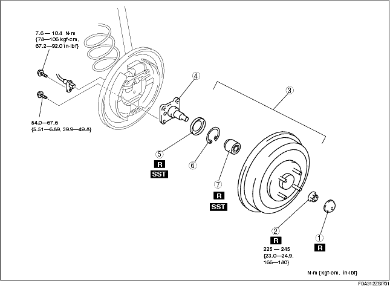

1. Remove the ABS wheel-speed sensor. (See REAR ABS WHEEL-SPEED SENSOR REMOVAL/INSTALLATION.)
2. Remove in the order indicated in the table.
3. Install in the reverse order of removal.

1. Remove the ABS sensor rotor from the brake drum using a flathead screwdriver.
1. Remove the wheel bearing using the SSTs and press.
1. Set the wheel bearing to the brake drum as shown in the figure.
2. Install the wheel bearing using the SSTs and a press.
1. Put a new ABS sensor rotor in using the SSTs and a press.
1. Tighten the locknut with 35-40 N·m {3.6-4.0 kgf·m, 26-29 ft·lbf} while turning the brake drum counterclockwise.
2. Turn the brake drum counterclockwise 10 times or more.
3. Tighten the locknut with 225-245 N·m {23.0-24.9 kgf·m, 166-180 ft·lbf} while turning the brake drum counterclockwise.
4. Turn the brake drum slowly by hand, and verify that there is no noise or dragging/grinding feelings.